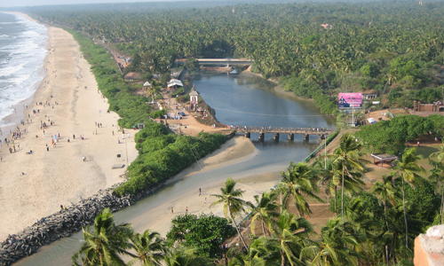

Kannur district

Kannur is most renowned for the Theyyam performances in its temples. This magnificent art form plays an integral part in the culture of this Northern Kerala district. Formerly known as Cannanore, Marco Polo christened it a ‘Great Emporium Of Spice Trade’. Kannur has, since time immemorial, been hailed as an influential sea port. Legend has it that it had interactions and trade relations with the rest of the world since the time of King Solomon to the Greeks, Arabs and Romans. It has a plethora of forts, temples, beaches and wildlife sanctuaries that regularly attract visitors. Major festivals and events are held throughout the year and this is among the best places in Kerala to spend your vacation in.
Top places to visit in kannur

Palakkayam Thattu

Vismaya Water Park

Payyambalam Beach